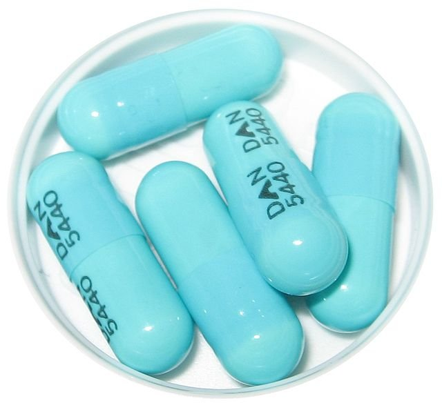

What’s the Deal with Doxycycline?

When it comes to treating persistent acne, dermatologists have increasingly turned to a decades-old antibiotic that's become a frequent topic of discussion in the skincare community. As one of the most commonly prescribed oral medications for moderate to severe acne, doxycycline's rise reflects both its documented efficacy and the ongoing search for reliable acne solutions. From its broad-spectrum antibacterial properties to its anti-inflammatory effects, this medication presents both promising benefits and notable limitations for those struggling with stubborn breakouts. Is it really the acne miracle worker some claim it to be? Let's dive into what you need to know before starting this prescription treatment.
The Wonder Pill?
Doxycycline's story begins in the 1950s, when scientists at Pfizer first developed it as part of their groundbreaking research into tetracycline antibiotics. It wasn't until 1967 that doxycycline was approved by the FDA, initially marketed under the brand name Vibramycin. The drug was first created to treat serious bacterial infections, particularly in cases where penicillin wasn't effective. Some other notable infections doxycycline is known to successfully treat include: sexually transmitted infections (namely Chlamydia), Rocky Mountain Spotted Fever, Lyme Disease, Brucellosis, and even the Plague (yes, all three forms)!
What made doxycycline stand out from its tetracycline siblings was its superior absorption in the body and longer half-life, meaning patients needed fewer doses to maintain effective treatment levels. This advantage, combined with fewer stomach-related side effects, made it a go-to choice for doctors. It's actually a broad-spectrum antibiotic that treats everything from malaria to respiratory infections.
By the 1990s, as antibiotic resistance to traditional topical treatments increased, dermatologists began increasingly turning to oral antibiotics like doxycycline. Its relatively good safety profile and effectiveness against inflammatory acne made it particularly attractive. Today, it's one of the most commonly prescribed oral antibiotics for moderate to severe acne, especially in cases where topical treatments alone aren't cutting it.
The Acne Answer?
Doxycycline’s approach to fighting acne is two-pronged. First, it targets Cutibacterium acnes (formerly known as Propionibacterium acnes or P. acnes), the bacteria that thrives in our pores and contributes to inflammatory acne. By interfering with the bacteria's protein production, doxycycline effectively reduces the bacterial population that triggers those frustrating breakouts. But what makes doxycycline particularly interesting for acne treatment is its second mechanism: it acts as an anti-inflammatory agent independent of its antibacterial effects. It inhibits specific enzymes called matrix metalloproteinases (MMPs) that contribute to skin inflammation. This means that even in cases where bacteria aren't the main culprit, doxycycline can help calm angry, inflamed breakouts.
This dual action explains why dermatologists often prescribe it for moderate to severe inflammatory acne—those painful, deep pimples and cystic breakouts—rather than primarily superficial acne like blackheads and whiteheads. The medication works from the inside out, addressing both the bacterial and inflammatory components that make acne so stubborn to treat with topical products alone.
The Doxycycline Dilemma
You knew this was coming. While the prescription antibiotic works to some degree in select cases, it isn’t exactly an acne cure for most. Understanding its limitations is crucial for setting realistic treatment expectations. Here's a comprehensive look at why it might not be the ideal solution for everyone:
1. “Results” Are Temporary
Limited Treatment Window: Dermatologists typically limit prescriptions to 3-4 months due to antibiotic stewardship guidelines. This isn't enough time to fundamentally change your skin's behavior.
Quick Rebound Effect: Many notice their acne returning within 3-4 months after stopping treatment. Without addressing underlying causes, you're essentially hitting pause on your acne rather than solving it.
Masking Root Causes: The temporary improvement can delay identification of crucial factors like hormonal imbalances, dietary triggers, or skin barrier dysfunction that need different interventions.
2. Antibiotic Resistance Concern
Personal Resistance: Extended use can lead to antibiotic-resistant bacteria on your skin, making future treatments with any antibiotics less effective. With Doxycycline being an oral antibiotic, this can impair your immune system in the future if antibiotic treatment is needed.
Community Impact: The more antibiotics are prescribed for acne, the more we contribute to global antibiotic resistance. This has led many dermatologists to seek alternative first-line treatments.
Cross-Resistance: Bacteria that become resistant to doxycycline often develop resistance to other antibiotics too, limiting future treatment options for both acne and other infections.
3. Limited Scope of Action
Hormone Resistant: Doxycycline doesn't affect hormone levels or oil production, making it ineffective for hormonally-driven breakouts common in: people with PCOS, breakouts that follow menstrual patterns, or jawline/neck breakouts.
Barrier Functions: It also doesn't address issues related to your skin’s barrier such as: compromised skin barrier function, excessive sebum production, irregular skin cell turnover, or dehydration.
Doxycycline tends to work best for inflammatory acne with visible pustules and papules and when used as a bridge to starting other, long-term treatments like retinoids. Another suitable use case for doxycycline is where rapid improvement is needed for a specific event or timeframe like, say, your wedding.
The Doxycycline Skincare Protocol
There hasn’t been a single client to walk through the doors of GLOWDEGA® who was prescribed doxycycline and didn’t try it. But a common issue is that most clients didn’t understand how drastically they would need to change their skin care routines to accommodate the changes in their skin as a result of the antibiotic. Doxycycline significantly alters your skin's behavior and sensitivity, requiring strategic adjustments to your skincare routine. If you and your dermatologist decide doxycycline is right for you, you'll have to modify your skincare routine. Full stop.
Doxycycline causes photochemical reactions in your skin cells that make them extremely vulnerable to UV damage. This isn't just about preventing sunburn—it's about avoiding potential permanent skin damage. You have an increased risk of severe sunburns and hyperpigmentation when using the antibiotic. As a result, you have to use SPF 50 and reapply every 2 hours (yes, even indoors). You also may want to wear sun protection clothing at all times as well since all skin on your body may be affected by the antibiotic use.
By targeting C. acnes bacteria, doxycycline alters the balance of your skin's natural microbiome. This shift in bacterial populations can temporarily affect how your skin functions and responds to products. And while it works as an anti-inflammatory treatment, it also means your skin may respond differently to products during treatment. For many, acne-specific skin care treatments feel very irritating while taking doxycycline. Your skin may also become drier than normal.
Sticking to gentle cleansers and hydrating products during doxycycline treatment should help alleviate any adverse reactions in the skin. And while there is a lot of advice to use an occlusive like CeraVe Healing Ointment or Aquaphor, you have to wait at least 2 hours after taking your doxy dose before applying. The reason for this is because mineral-based ingredients can bind to doxycycline and reduce its effectiveness.